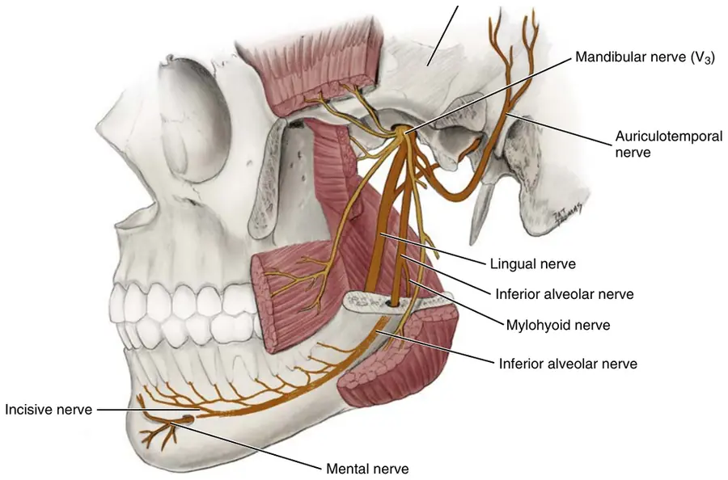

نسخه استخراجشده؛ ترجمه یا تأیید علمی انجام نشده است. وضعیت: captured
پس از بلاک عصب آلوئولار تحتانی (IANB)، تزریق کنار سوراخ مندیبولار، لب پایین و نیمهی زبان بیحس است و تراش مولر اول بیدرد پیش رفت. ولی تا کلمپ رابردم (گیرهی نگهدارندهی پردهی لاستیکی) را روی لثهی باکال مولر میگذاری، بیمار درد میکشد. کدام عصب جا مانده است؟
V3 بزرگترین شاخهی عصب سهقلو و تنها شاخهی مختلط آن است. ریشهی حسی بزرگ و ریشهی حرکتی کوچک جداگانه از سوراخ بیضی بیرون میآیند و درست بیرون جمجمه یکی میشوند. این تنه فقط ۲ تا ۳ میلیمتر یکپارچه میماند و بعد به بخش قدامی کوچک و بخش خلفی بزرگ تقسیم میشود.
عصب باکال از میان دو سر پتریگوئید خارجی میگذرد، زیر لبهی قدامی ماستر بیرون میآید و همسطح اکلوزال مولر سوم یا دوم پایین از جلوی لبهی قدامی راموس رد میشود. پوست گونه، لثهی باکال مولرهای پایین و چین مخاطی باکال همان ناحیه را حس میدهد، ولی لب پایین را نه.
IANB محلول را کنار بخش خلفی میگذارد و به عصب باکال نمیرسد؛ پس درد لثهی باکال مولر شکست IANB نیست. این عصب را بلاک باکال جدا میگیرد: تزریقی کوتاه در مخاط دیستال و باکال آخرین مولر که میشود بلافاصله پس از IANB زد.
بخش خلفی بیشتر حسی است و در سمت داخل پتریگوئید خارجی به سه عصب تقسیم میشود:

چرا IANB عصب میلوهایوئید را نمیگیرد؟ این عصب پیش از ورود عصب آلوئولار تحتانی به کانال، بالاتر از سوراخ مندیبولار جدا میشود و در شیار میلوهایوئید پایین میرود. اگر به ریشهی مزیال مولر اول یا ثنایاها فیبر حسی بدهد، تزریق مکمل روی همان ریشه یا بلاک گاو-گیتس آن را میگیرد.